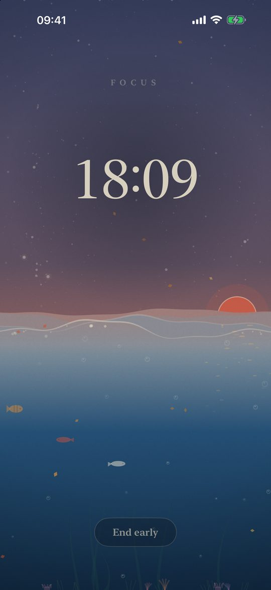
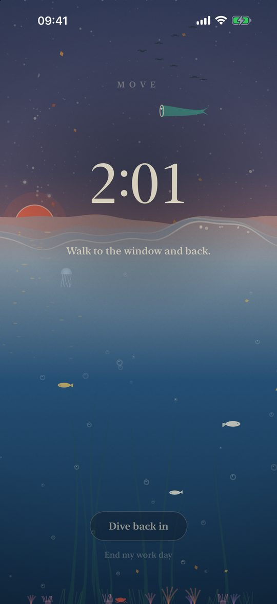
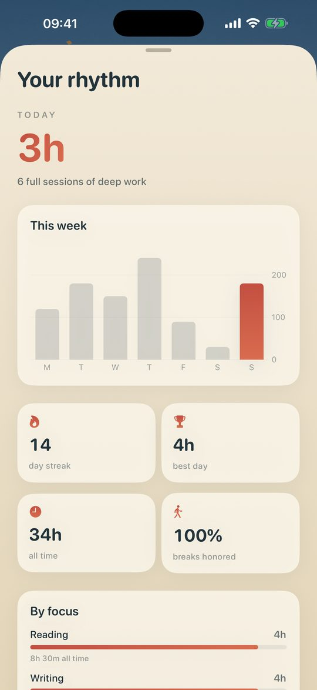

Cadence
Focus timer and app blocker for iPhone, iPad and Mac.
Thirty minutes of deep work, then three on your feet. The sea rises while you focus and recedes while you move, under a living woodblock-print sky that follows your real day and your local weather.
Download on the App StoreFree download. Blocking is free for three focus sessions, then one purchase unlocks it for good on all your devices. No subscription.

What it does
A focus timer that makes you move
Thirty minutes of focus and a three-minute movement break by default, adjustable from 10 to 50 minutes. The break is a tenth of the time you worked, and it starts on its own so you actually stand up.
Blocks distracting apps and websites
Pick the apps to block during a focus with Apple's Screen Time picker. The websites of the social apps on your phone are blocked too, in Safari and in other browsers.
A curfew for your nights
Choose two hours, say 11 pm to 7 am, and the apps you picked lock themselves every night, even when Cadence is closed. A countdown on the Mac warns you ten minutes before.
Deep work mode
When you turn it on, a focus cannot be ended early. The bell decides.
iPhone, iPad and Mac, in sync
A native Mac app with its menu bar timer, hiding the apps you choose. Your sessions, settings and curfew follow you through iCloud.
Siri, widgets, Live Activity
Start or end a focus with Siri or the Control Center, and watch the tide in the Dynamic Island.
Mac

Why stand up every half hour
Sitting is not the whole problem; sitting without a break is. Studies on uninterrupted sedentary time (Diaz et al., 2017; Duran et al., 2023) and the WHO 2020 guidelines point the same way: break it up often. Cadence is built around that rhythm.


Private by design
No account, no ads, no tracking. Cadence collects no data: your history stays on your devices and in your own iCloud.
Questions
How do I block apps at night on iPhone?
Turn on the curfew in Cadence, set its hours and choose the apps to block. Every night, at the time you set, iOS locks those apps until the morning, even if Cadence is not open.
Is Cadence a Pomodoro timer?
It works like one, with a health twist: thirty minutes of focus, then a short break spent on your feet. The length of the focus is adjustable.
Does it block websites in Chrome, not only Safari?
Yes. During a focus, the websites of the social apps installed on your phone are blocked in every browser on iOS, Chrome included.
Is there a subscription?
No. Cadence is free to download. Blocking is free for three focus sessions; after that, Cadence Premium is a single one-time purchase that covers your iPhone, iPad and Mac.
Does it work on the Mac?
Yes, as a native Mac app from the Mac App Store. It hides the apps you choose during a focus and can cover the whole screen during your curfew.